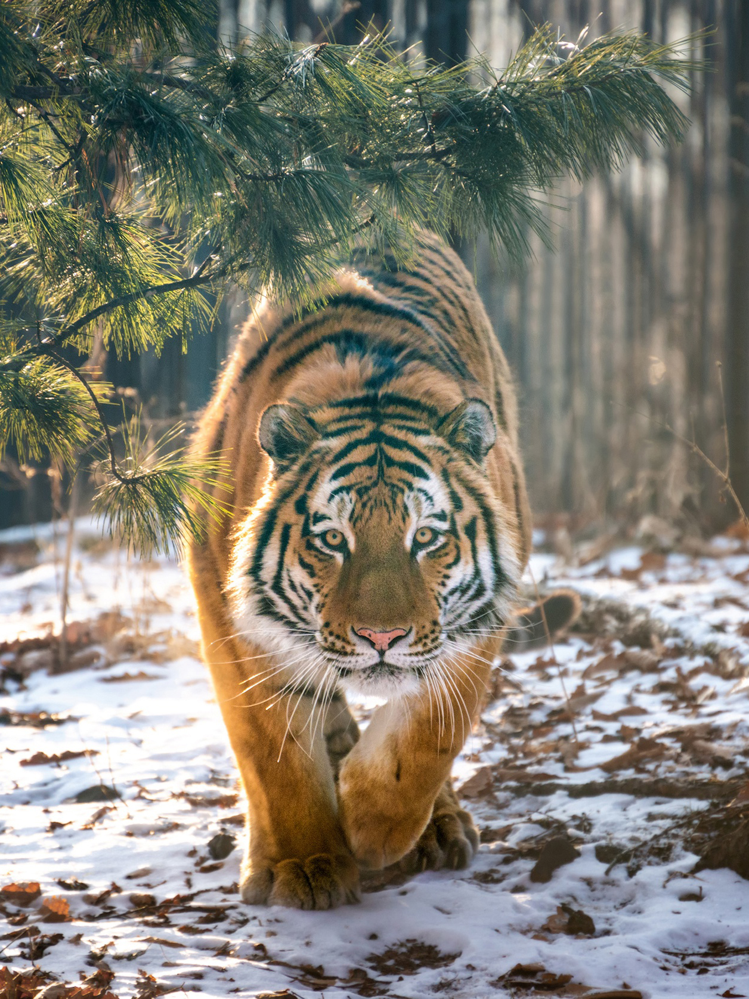
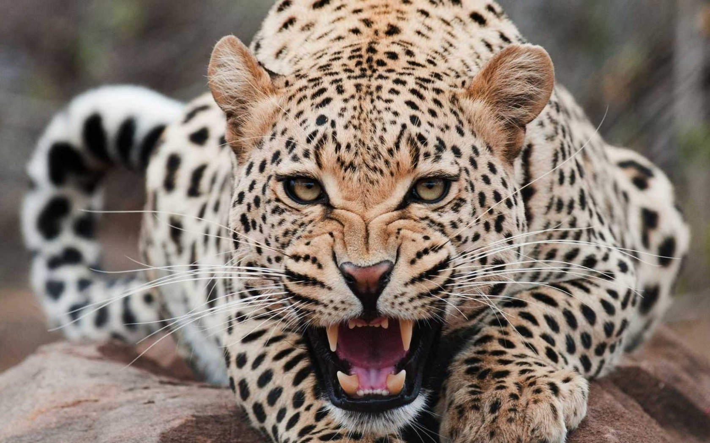
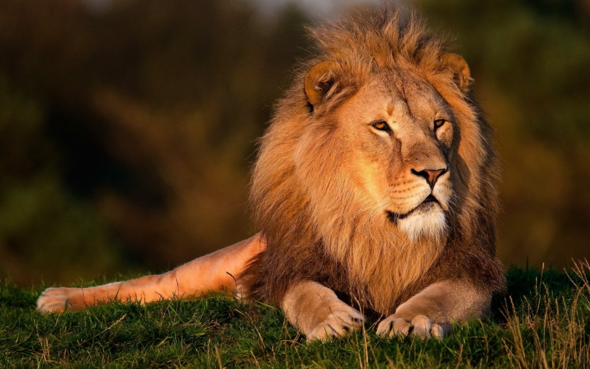

Главная |

ТигрПо внешнему виду довольно сильно отличается от льва, но их черепа настолько сходны, что различаются с трудом. Общий облик тигра значительно более кошачий, чем у льва.При всем том это огромный могучий зверь, поражающий мощью, легкостью и ловкостью движений. В длину тело тигра 180—280 см, хвост примерно 90 см, масса от 227 до 272 кг. Чрезвычайно характерна поперечнополосатая окраска тигра, рисунок которой сильно варьирует в различных географических районах и служит основанием для выделения ряда подвидов. В Индии иногда встречаются и специально разводятся белые тигры, у которых по белому фону расположены коричневые полосы. У этих зверей голубые глаза. В связи с постоянным преследованием со стороны человека и неблагоприятными изменениями условий обитания численность тигра непрерывно падает, а область распространения сокращается. Основная часть ареала тигра приходится на тропические и субтропические широты. Перейти |

ЛеопардЛеопард является кошкой больших размеров, но уступает своей величиной тигру и льву. Тело животного вытянутее и мускулистое, а также легкое и гибкое. Длина хвоста леопарда превышает половину длины его тела, которое слегка сжато с боков. Ноги леопарда сильные, но кроткие. Лапы широкие и массивные, а голова не отличается большими размерами и имеет округлую форму. Голову животного украшают небольшие закругленные уши, широко расположенные друг от друга. Животные, обитающие на территории лесов, обладают меньшими размерами и массой тела, чем их собратья, населяющие открытые участки земли. Самцы леопардов обычно превышают своими размерами самок на треть. Длина тела взрослой особи барса варьируется от 90 до 190 см (средним показателем служит значение 160 см). Хвост леопарда может иметь длину от 50 до 78 см. Самки леопарда достигают 45 см высоты в холке. Перейти |

ЛевВ настоящее время лев сохранился только в Центральной Африке, а затем, в очень небольшом числе, в индийском штате Гуджарат, в Гирских лесах. Вопреки широко распространенному мнению, лев отнюдь не принадлежит к числу обитателей пустынь. Для него наиболее благоприятны саванны с их открытым ландшафтом, обилием разнообразных копытных животных, наличием водопоев Рев льва слышен на расстоянии нескольких километров, и даже в полсилы приводит в оцепенение. Они способны издавать странные звуки, которые кажется, исходят не из горла, а из брюха. Единственные из семейства кошачьих, живущих стаями, а точнее прайдами, это львы. В прайде обычно живет один взрослый самец, иногда бывает и больше, несколько самок, их детеныши и молодые львы.Львят-самцов обучают охоте позднее самок, порой молодые львы начинают учиться на пятом году. Перейти |
|---|---|---|